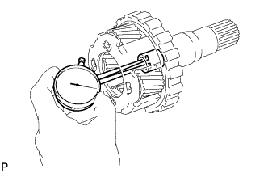

БЛОК АВТОМАТИЧЕСКОЙ ТРАНСМИССИИ > ПРОВЕРКА |
| 1. ПРОВЕРЬТЕ МАСЛЯНЫЙ ПОДДОН АВТОМАТИЧЕСКОЙ ТРАНСМИССИИ В СБОРЕ |
Снимите магниты и с их помощью соберите стальные частицы.
Внимательно осмотрите посторонние включения и частицы, имеющиеся в поддоне и на магнитах, чтобы определить, какому типу износа подвергается трансмиссия.
| 2. ПРОВЕРЬТЕ МУФТУ СВОБОДНОГО ХОДА № 2 В СБОРЕ |
 |
Удерживая ступицу муфты заднего хода, проверьте вращение муфты свободного хода в сборе.
Убедитесь, что муфта свободного хода свободно вращается по часовой стрелке и блокируется при вращении против часовой стрелки.
 | Заблокировано |
 | Разблокировано |
| 3. ПРОВЕРЬТЕ ДИСК ЗАДНЕЙ МУФТЫ |
 |
Замените все диски при наличии какого-либо из следующих дефектов: 1) износа или подгорания диска, пластины или фланца; 2) отслоения или выцветания фрикционной накладки диска; 3) повреждения (даже небольшого) канавок или проштампованных номеров.
| 4. ПРОВЕРЬТЕ СТУПИЦУ МУФТЫ ЗАДНЕГО ХОДА В СБОРЕ |
 |
С помощью индикатора часового типа измерьте внутренний диаметр втулки ступицы муфты заднего хода.
| 5. ПРОВЕРЬТЕ СТУПИЦУ МУФТЫ ПЕРЕДНЕГО ХОДА В СБОРЕ |
С помощью индикатора часового типа измерьте внутренний диаметр втулки ступицы муфты переднего хода.
| 6. ПРОВЕРЬТЕ ДИСК МНОГОДИСКОВОЙ МУФТЫ ПЕРЕДНЕГО ХОДА |
 |
Замените все диски при наличии какого-либо из следующих дефектов: 1) износа или подгорания диска, пластины или фланца; 2) отслоения или выцветания фрикционной накладки диска; 3) повреждения (даже небольшого) канавок или проштампованных номеров.
| 7. ПРОВЕРЬТЕ СТЯЖНУЮ ПРУЖИНУ МУФТЫ ПЕРЕДНЕГО ХОДА В СБОРЕ |
С помощью штангенциркуля измерьте длину пружины с седлом в свободном состоянии.
| 8. ПРОВЕРЬТЕ ДИСК МУФТЫ ПРЯМОЙ ПЕРЕДАЧИ |
 |
Замените все диски при наличии какого-либо из следующих дефектов: 1) износа или подгорания диска, пластины или фланца; 2) отслоения или выцветания фрикционной накладки диска; 3) повреждения (даже небольшого) канавок или проштампованных номеров.
| 9. ПРОВЕРЬТЕ СТЯЖНУЮ ПРУЖИНУ МУФТЫ ЗАДНЕГО ХОДА В СБОРЕ |
 |
С помощью штангенциркуля измерьте длину пружины с седлом в свободном состоянии.
| 10. ПРОВЕРЬТЕ СТЯЖНУЮ ПРУЖИНУ МУФТЫ ПРЯМОЙ ПЕРЕДАЧИ В СБОРЕ |
С помощью штангенциркуля измерьте длину пружины с седлом в свободном состоянии.
| 11. ПРОВЕРЬТЕ ТОРМОЗНОЙ ДИСК № 3 |
 |
Замените все диски при наличии какого-либо из следующих дефектов: 1) износа или подгорания диска, пластины или фланца; 2) отслоения или выцветания фрикционной накладки диска; 3) повреждения (даже небольшого) канавок или проштампованных номеров.
| 12. ПРОВЕРЬТЕ СТЯЖНУЮ ПРУЖИНУ ПОРШНЯ ТОРМОЗНОГО ЦИЛИНДРА № 3 В СБОРЕ |
 |
С помощью штангенциркуля измерьте длину пружины с седлом в свободном состоянии.
| 13. ПРОВЕРЬТЕ ПЕРЕДНЮЮ ПЛАНЕТАРНУЮ ПЕРЕДАЧУ В СБОРЕ |
 |
С помощью комплекта плоских щупов измерьте осевой зазор ведущей шестерни передней планетарной передачи.
 |
С помощью нутромера измерьте внутренний диаметр втулки передней планетарной передачи.
| 14. ПРОВЕРЬТЕ МУФТУ СВОБОДНОГО ХОДА В СБОРЕ |
 |
Установите муфту свободного хода на внутреннее кольцо муфты свободного хода.
Удерживая внутреннее кольцо муфты свободного хода, проверьте вращение муфты свободного хода в сборе. Убедитесь, что муфта свободного хода свободно вращается против часовой стрелки и блокируется при вращении по часовой стрелке.
| Заблокировано |
| Разблокировано |
Снимите муфту свободного хода с внутреннего кольца муфты свободного хода.
| 15. ПРОВЕРЬТЕ ТОРМОЗНОЙ ДИСК № 1 |
Замените все диски при наличии какого-либо из следующих дефектов: 1) износа или подгорания диска, пластины или фланца; 2) отслоения или выцветания фрикционной накладки диска; 3) повреждения (даже небольшого) канавок или проштампованных номеров.
| 16. ПРОВЕРЬТЕ СТЯЖНУЮ ПРУЖИНУ ПОРШНЯ ТОРМОЗНОГО ЦИЛИНДРА В СБОРЕ |
 |
С помощью штангенциркуля измерьте длину пружины с седлом в свободном состоянии.
| 17. ПРОВЕРЬТЕ ТОРМОЗНОЙ ДИСК № 2 |
Замените все диски при наличии какого-либо из следующих дефектов: 1) износа или подгорания диска, пластины или фланца; 2) отслоения или выцветания фрикционной накладки диска; 3) повреждения (даже небольшого) канавок или проштампованных номеров.
| 18. ПРОВЕРЬТЕ СТЯЖНУЮ ПРУЖИНУ ПОРШНЯ ТОРМОЗНОГО ЦИЛИНДРА № 2 В СБОРЕ |
 |
С помощью штангенциркуля измерьте длину пружины с седлом в свободном состоянии.
| 19. ПРОВЕРЬТЕ ЦЕНТРАЛЬНУЮ ПЛАНЕТАРНУЮ ПЕРЕДАЧУ В СБОРЕ |
 |
С помощью комплекта плоских щупов измерьте осевой зазор ведущей шестерни центральной планетарной передачи.
| 20. ПРОВЕРЬТЕ МУФТУ СВОБОДНОГО ХОДА № 3 В СБОРЕ |
 |
Удерживая фланец коронной шестерни задней планетарной передачи, проверьте вращение муфты свободного хода. Убедитесь, что муфта свободного хода свободно вращается против часовой стрелки и блокируется при вращении по часовой стрелке.
| Заблокировано |
| Разблокировано |
| 21. ПРОВЕРЬТЕ ФЛАНЕЦ КОРОННОЙ ШЕСТЕРНИ ЗАДНЕЙ ПЛАНЕТАРНОЙ ПЕРЕДАЧИ В СБОРЕ |
 |
С помощью индикатора часового типа измерьте внутренний диаметр втулки коронной шестерни задней планетарной передачи.
| 22. ПРОВЕРЬТЕ ПРОМЕЖУТОЧНЫЙ ВАЛ |
 |
С помощью индикатора часового типа измерьте биение промежуточного вала.
 |
С помощью микрометра измерьте диаметр промежуточного вала в показанных на рисунке местах.
| 23. ПРОВЕРЬТЕ ТОРМОЗНОЙ ДИСК № 4 |
 |
Замените все диски при наличии какого-либо из следующих дефектов: 1) износа или подгорания диска, пластины или фланца; 2) отслоения или выцветания фрикционной накладки диска; 3) повреждения (даже небольшого) канавок или проштампованных номеров.
| 24. ПРОВЕРЬТЕ ЗАДНЮЮ ПЛАНЕТАРНУЮ ПЕРЕДАЧУ В СБОРЕ |
С помощью комплекта плоских щупов измерьте осевой зазор ведущей шестерни задней планетарной передачи.
|  |
С помощью индикатора часового типа измерьте внутренний диаметр втулки задней планетарной передачи.
| 25. ПРОВЕРЬТЕ СТЯЖНУЮ ПРУЖИНУ ТОРМОЗА 1-Й ПЕРЕДАЧИ И ПЕРЕДАЧИ ЗАДНЕГО ХОДА В СБОРЕ |
 |
С помощью штангенциркуля измерьте длину пружины с седлом в свободном состоянии.
| 26. ПРОВЕРЬТЕ ТОРМОЗ 1-Й ПЕРЕДАЧИ И ПЕРЕДАЧИ ЗАДНЕГО ХОДА |
Прерывисто подавая сжатый воздух в картер трансмиссии, убедитесь, что поршень тормозного цилиндра 1-й передачи и передачи заднего хода двигается плавно.
| 27. ПРОВЕРЬТЕ ТОРМОЗ № 1 |
Прерывисто подавая сжатый воздух в картер трансмиссии, убедитесь, что поршень тормозного цилиндра № 1 двигается плавно.
| 28. ПРОВЕРЬТЕ РАБОТУ КАЖДОГО ПОРШНЯ |
Подавая сжатый воздух в отверстия для заливки масла, показанные на рисунке, проверьте наличие звука срабатывания.